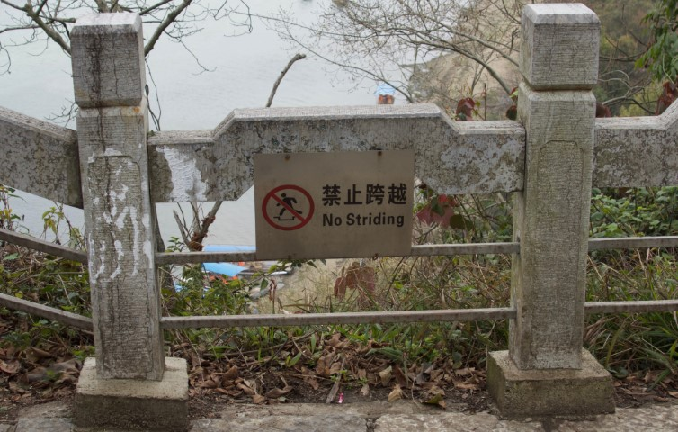
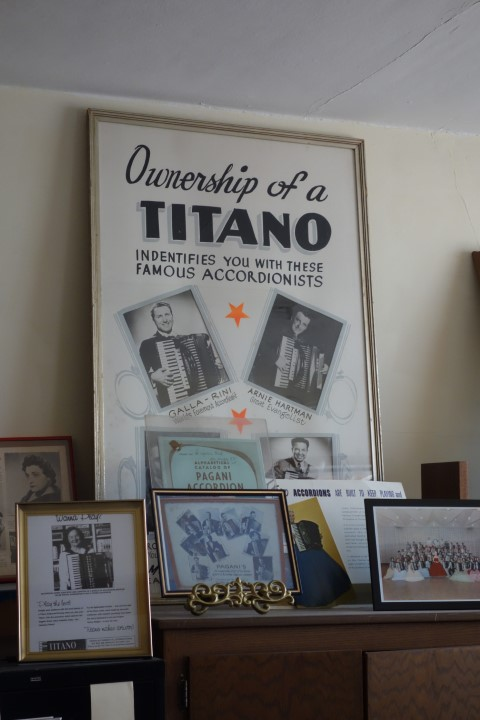
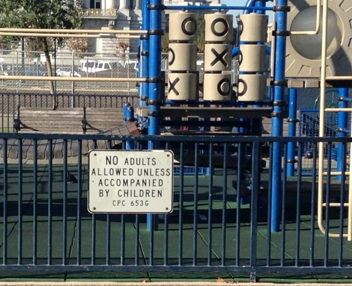
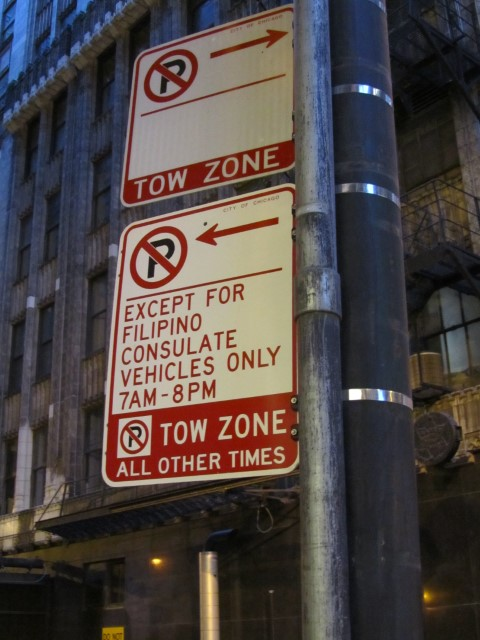
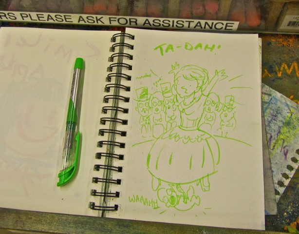

Additional practice for applying mistakes and OKs:

Mistake:
If we expect to see a word other than "striding," then
No mistake: If we don't know idiomatic English, we won't see this as unusual—it's not a mistake.
OK: If we understand the sign and feel secure from negative personal consequences—it's OK.
Not OK:
If we commissioned this sign and then realized it's not idiomatic, we feel risk of negative personal consequences

Mistake: If we don't expect owning a brand of accordion to be aspirational, a sincere poster about this my deviate from our expectations—it's a mistake.
No mistake: If we grew up in a musical family in the 1960s and we've had this poster forever, it may be completely expected—it's not a mistake.
OK: If the poster is in a museum, we'll feel secure from personal negative consequences—it's OK.
Not OK: If the poster reminds us of something embarrassing, we may feel insecure from personal negative consequences—it's not OK.

Mistake:
If we expect to see the opposite phrasing
(
No mistake: If we take our kid here every day, we come to expect the sign—it's not a mistake.
OK: If this sign and law makes us feel more comfortable letting our kids play here, seeing this sign may make us feel secure from negative personal consequences—it's OK.
Not OK: If we used to hang out and smoke with our friends on this playground, we may realize this new sign was about us and we feel embarrassed or in possible legal trouble—it's not OK.

Mistake: If we've never seen an official sign making parking exceptions for Filipino consulate vehicles, this sign deviates from our expectations—it's a mistake.
No mistake: If we live in a big city with lots of consulates, these unique signs may feel completely normal to us—it's not a mistake.
OK: If we're walking, this sign has no effect on us and so we'll feel secure from negative consequences—it's OK.
Not OK: If we're driving and trying to find a parking spot, the lack of parking may make us feel a risk of negative personal consequences—it's not OK.

Mistake: If we don't expect the quality of the drawing or its contents in a public sketchbook, we'll see this as a deviation from the expected—a mistake.
No mistake: If we don't see the sketchbook, we'll never have anything deviate from our expectations—it's not a mistake.
OK: If we appreciate the drawing as we're shopping for art supplies, we won't feel any risk of negative consequences—it's OK.
Not OK: If we work at the store, we may worry about whether the drawing is too weird. We'd feel risk of negative personal consequences—it's not OK.
Mistake: If we don't expect "goat" and "advocado" to be combined (in words or pictures), this branding deviates from our expectations—it's a mistake.
No mistake: If we eat here everyday, it's part of our expectations—it's not a mistake.
OK: If the name of this food cart doesn't bother us, we'll feel secure from negative personal consequences—it's OK.
Not OK. If the name seems stupid and like annoying people must run it we may feel risk of negative personal consequences—it's not OK.
Mistake: If we expect the horse to say "neigh," then saying "doctorate denied" deviates from our expectations—it's a mistake.
No mistake: If we've watched this clip dozens and dozens of times, saying "doctorate denied" is exactly in-line with our expectations—it's not a mistake.
OK: If we know it's a show, we know we're secure from negative personal consequences—it's OK.
Not OK: If we're procrastinating, we may eventually feel that taking time to watch clips from old shows has a risk of negative personal consequences—it's not OK.